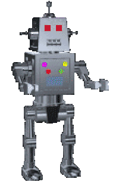
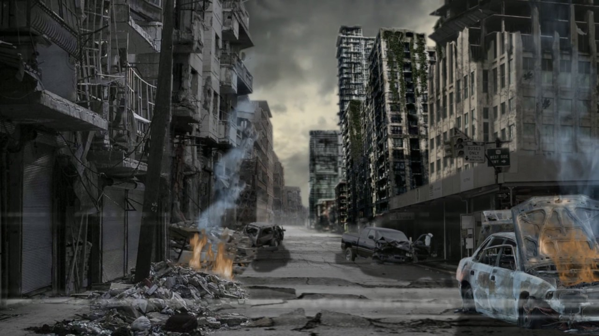

Artificial intelligence is seen by many to be the gateway to a brand new era of humanity, one where all of us could live in luxury, where nobody has to ever work, nobody is ever hungry, where the world, and where you can just crack open a cold one with your new plastic best friend. This idealistic future is what ExoMind aims to create for all walks of life, so that all of us can focus on what truly matters, finding oneself, and everyone's favourite; expanding to that stars!

Although, that hopeful view of our future isn't shared by everyone, quite a numerous amount of experts, including many notable people such as SpaceX Founder and Tesla CEO Elon Musk, The man who made the internet himself, Sir Tim Berners-Lee, and even Professor Stephen Hawking. One proposed way that artificial intelligence could doom humanity is through one extremely intelligent Ai deciding humanity is too threatening to either itself or the environment and decides to get rid of us, like Skynet from Terminator. Although we at ExoMind will never let that happen!